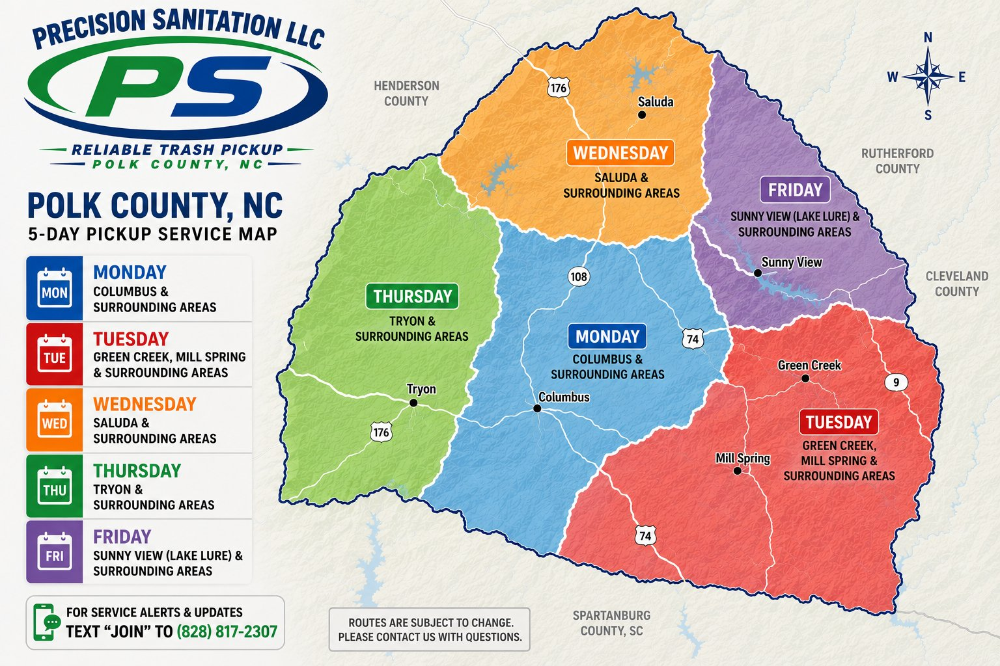

We serve all of Polk County, NC with a 5-day weekly pickup schedule. Find your community and your pickup day below.
Routes are subject to change. Contact us with any questions about your specific address or pickup day.
Columbus and surrounding areas in central Polk County.
Green Creek, Mill Spring, and surrounding eastern areas.
Saluda and surrounding northern areas near Hwy 176.
Tryon and surrounding western areas along Hwy 176.
Sunny View, Lake Lure area, and eastern Polk County near Rutherford County.
The map below shows our 5 color-coded pickup zones across Polk County.

Routes are subject to change. Please contact us at (828) 817-2307 with questions about your specific address.
Sign up for service alerts and route updates — delivered right to your phone.
Give us a call and we'll help figure out your zone and schedule.
📞 (828) 817-2307